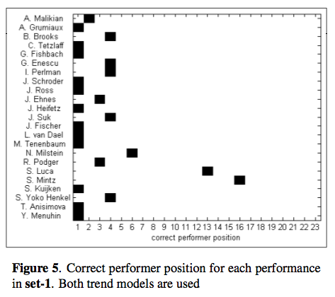
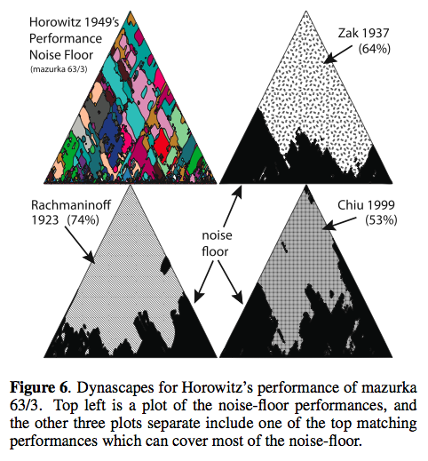
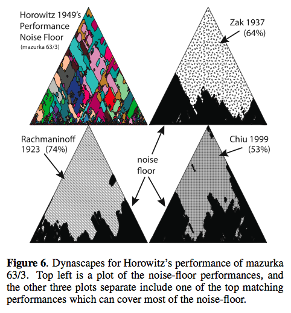

ISMIR Day 2 Session 2 - Performance Analysis and Music Summarization
Using Expressive Trends for Identifying Violin Performers
Miguel Molina-Solana, Josep Lluis Arcos and Emilia GomezMiguel presents the goal - identify violinists by their playing style using commercial audio recordings and state-of-the-art feature extraction tools.
Problems : High heterogenicity, Partial Accuracy, Perform variability.
Approach: characterize performers by analyzing only the feature trends.Three steps: Feature extraction, Modeling trends, Classify models
Evaluation: 23 different violinists. This graph shows the correct performer position for each of the 23 violinist.

They achieved good results with just a small amount of data.
Hybrid Numeric/Rank Similarity Metrics for Musical Performance Analysis
Craig SappThis paper describes a numerical method for examining similarities among tempo and loudness features extracted from recordings of the same musical work and compares its performance to a Pearson correlation.
89 performances of mazurka - more info here: CHARM and the Mazurka Project
Evaluation - how well can 2 of Rubinstein's performances be identified with the 3rd. Craig really takes advantage of visualizations in his work - I find it to be incredibly interesting (although I don't really understand it all very well).
 

Creating and Evaluating Multi-Phrase Music Summaries
Konstantinos Meintanis and Frank ShipmanThis paper explores whether the composition of multiple characteristic phrases that are selected to be highly dissimilar to one another will increase the summary's effectiveness.
Goal - select the most salient phrase from a song to serve as a music summary - useful, for instance, in an online music store - or for personal organization. The summary should be short and recognizable. The author suggests that one highly repeated phrase does not guarantee better effectiveness. Highly repeated, yet different from one another, or distinct (non-repeated) phrases.
- REA - emphasizes repeated phrases
- SDEA - emphasizes phrases that are sonically distinct
- IA = Intermediate algorithm